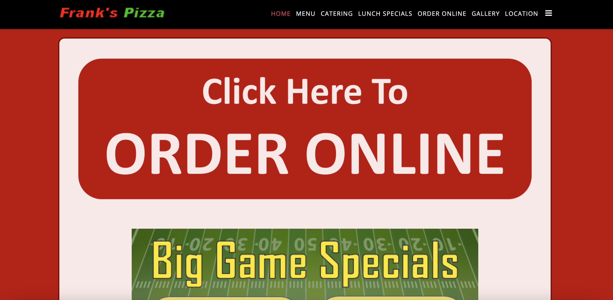
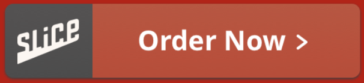
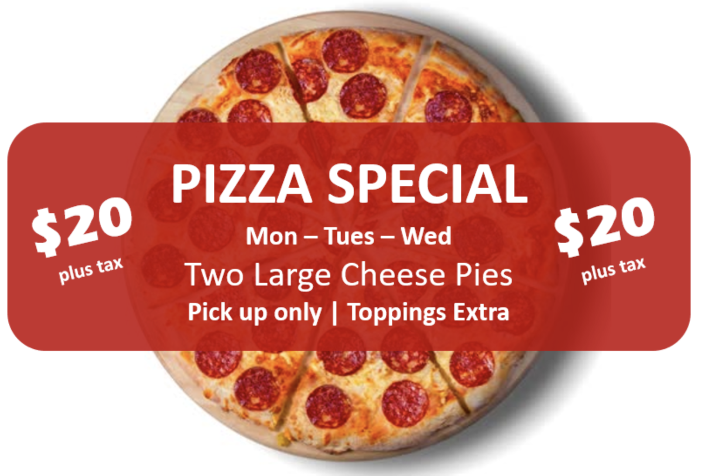
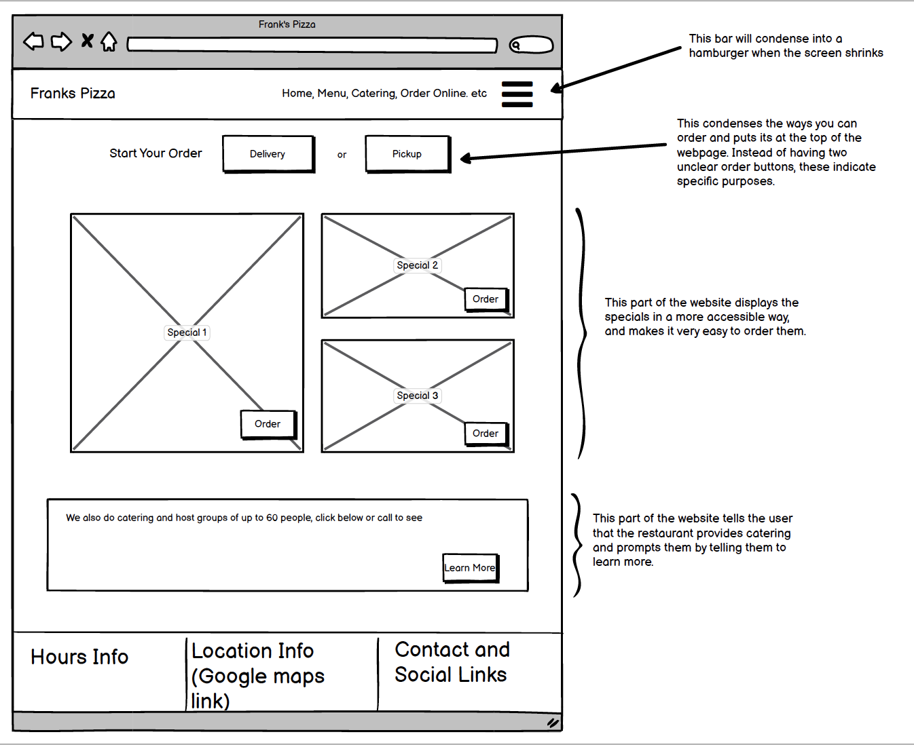
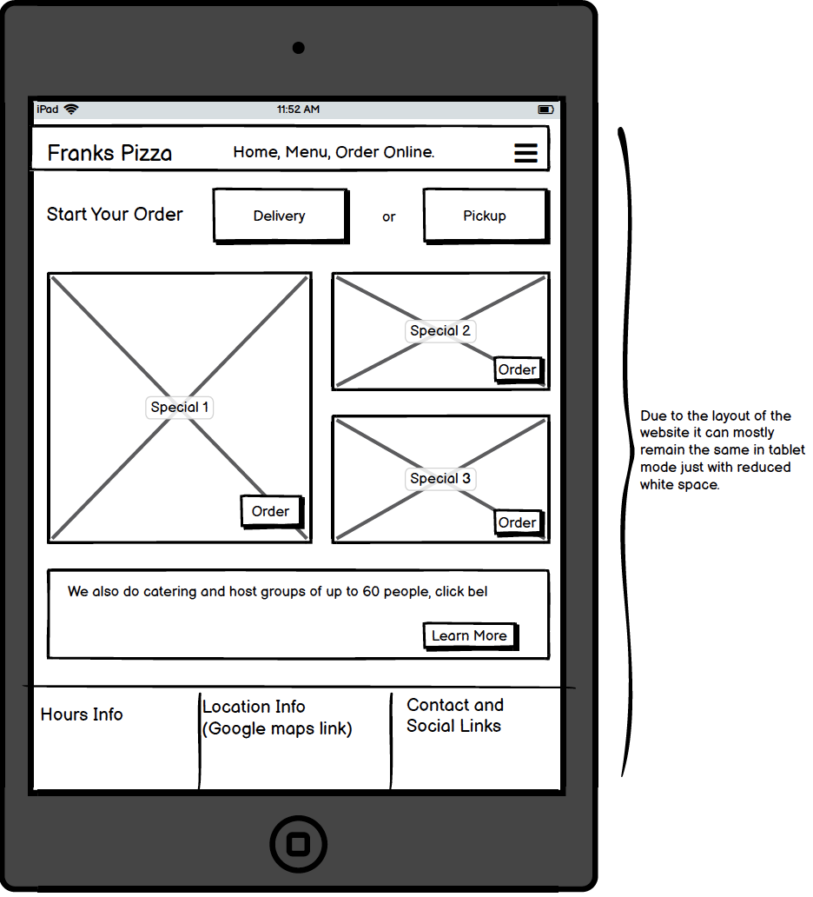
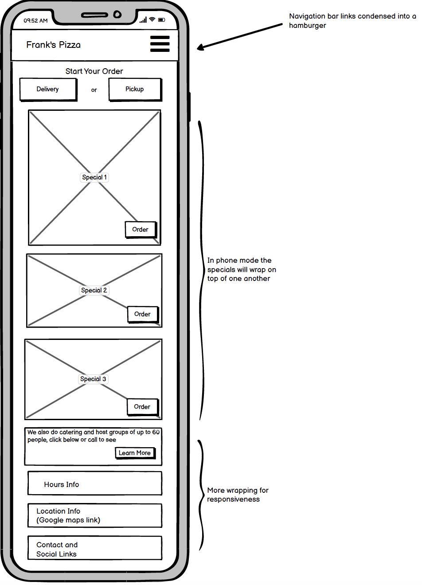
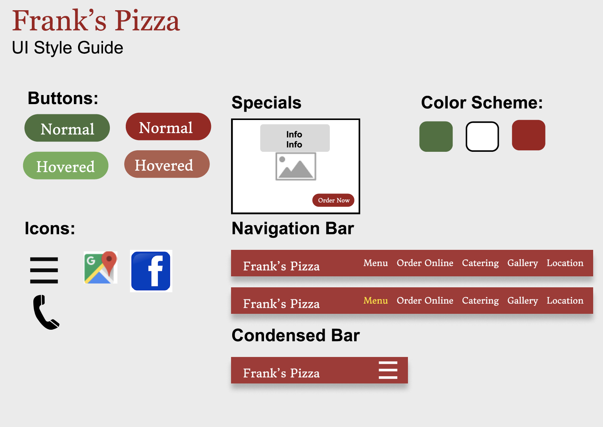
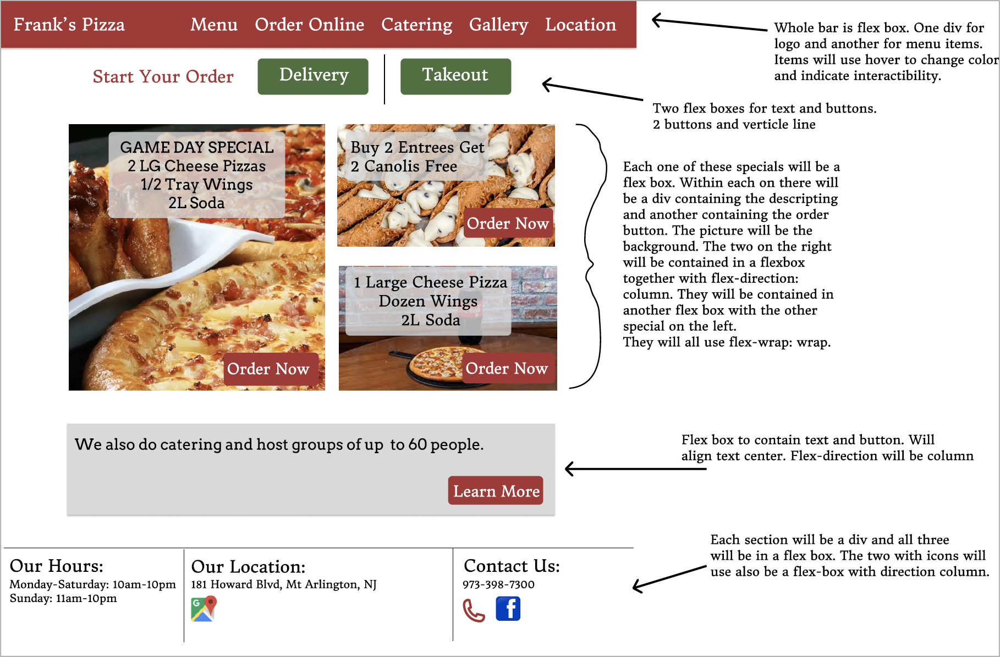
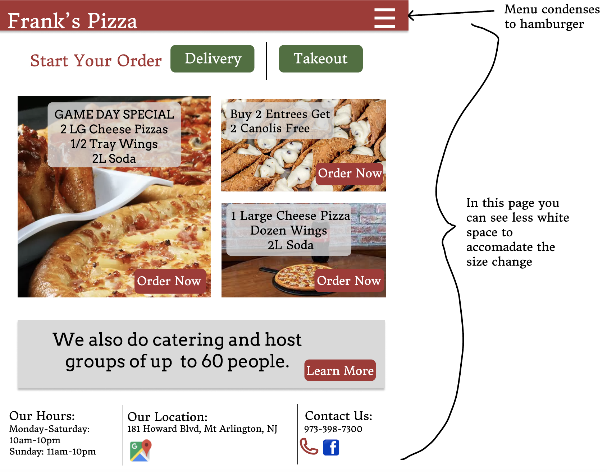
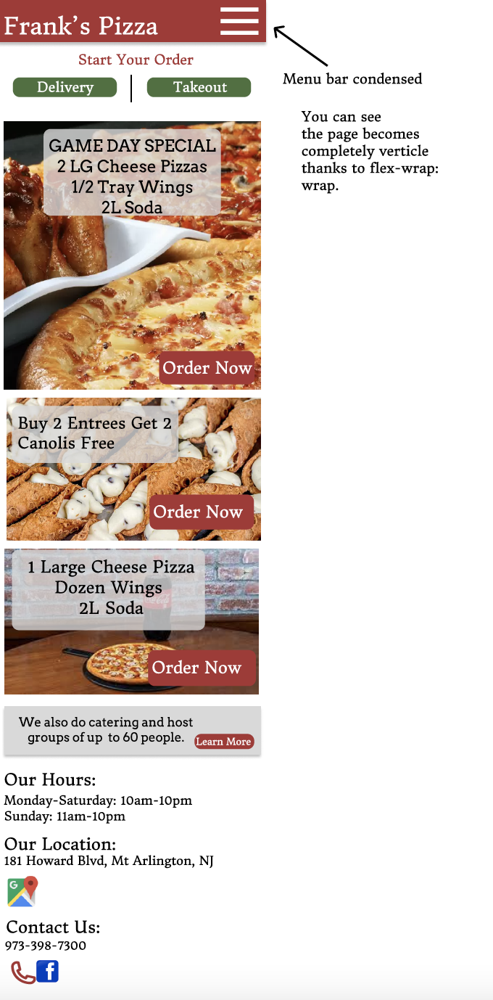

Responsive Redesign
In this project I redesign a website for a local pizzeria.
Part 1: The Website
The website I choose is the website of a local pizzeria near me called Frank's Pizza. Below is a image of their website, of which I am redesigning their home page. I chose this website because its a pizza place I frequent but often have a hard time ordering online.

You can access this website here.
Part 2: The Issues
I found multiple issues on this website that fall into the realm of usability, memoriability, and learnibility. Since I feel that many of these issues overlap categories I choose to not display them in a three column table, but rather as a bulleted list. Here they are:

The first issue I found on the website is that there are two order buttons on the home page. Both of these buttons also open a new tab on the Browser even though one of them opens to a different section on the same website. This can first of all confuse the user as to which one they should use and when it opens a new tab for the user it may cause them to think they did something wrong.
The first issue I found on the website is that there are two order buttons on the home page. Both of these buttons also open a new tab on the Browser even though one of them opens to a different section on the same website. This can first of all confuse the user as to which one they should use and when it opens a new tab for the user it may cause them to think they did something wrong.

Another issue I found is how the specials are advertised on the home page. On the homepage they list multiple specials but do not indicate any way to use or claim them. This makes the interface much harder to learn how to use. A button on or near the add that allows you to order the special would be beneficial.
Another issue I found is how the specials are advertised on the home page. On the homepage they list multiple specials but do not indicate any way to use or claim them. This makes the interface much harder to learn how to use. A button on or near the add that allows you to order the special would be beneficial.
Here is an advertisment for a private party room that is available for customers. This is lacking any indiction of how to reserve this space though, leaving the user lost. Either there should be an indication to call to reserve, or button or link that will take the user to instructions on how to reserve this.
Part 3: Low-Fi Designs
In this section I am going to show three lo-fi designs that I made for my redesign.



Part 4: Visual Style Guide

Part 5: Hi-Fi Designs- Computer, Tablet , and Phone



Part 6: The Redesign
View the redesigned responsive website here:
Frank's Pizza